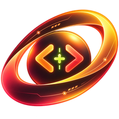

待機中
株式会社才の紹介スライドを作って
中身はどうしますか？
1. ネットで調べる
2. 添付したファイルをもとに
3. 自分で伝える
1. ネットで調べる
2. 添付したファイルをもとに
3. 自分で伝える
1で。デザインはおまかせ
作って開きました。直したいところがあれば言ってください。
P
株式会社才の紹介.pptxスライド 9枚
開く
待機中
ふだんは画面の隅に小さく待機。
「ウェイク、ゼラス」と呼ぶか、右Ctrl を押しながら話しかけます。
できること
声で話しかける
マイクのボタンや合図の言葉で、そのまま会話。返事は声で読み上げます。
PCを操作する
アプリを開く、ファイルを探す・開く、Webページを操作する、メールを既読にする など。
資料を作る
Word・PowerPoint・Excel のファイルを、内容とデザインを聞いてから作ります。
PCの中だけで動く
AIは自分のPCで動くので、会話の中身を外部のAIサービスへ送りません。
インストールのしかた
- 上のボタンから
ZealousSetup.exeをダウンロードして、開きます。 - 「WindowsによってPCが保護されました」と出たときは、「詳細情報」→「実行」を押します（まだ電子署名を付けていないため表示されます）。
- 案内に沿って進めると、はじめての起動でAI・読み上げ・音声認識の部品を自動で準備します（回線によって数分〜数十分）。
2回目からは、Zealous の中の「更新」ボタンで新しい版に更新できます。
動作環境
| OS | Windows 10 / 11（64ビット） |
|---|---|
| メモリ | 8GB 以上（16GB 以上を推奨。テクニカルモード用のAIを使う場合） |
| 空き容量 | 約 10GB（AIモデル・読み上げの声・音声認識の部品を含む） |
| あると便利 | マイク・スピーカー、NVIDIA 製の GPU（AIの返事が速くなります） |
兄弟ツール Catalys+（カタリス）

コードを書く・Webサイトを直すなら Catalys+
Zealous と同じく、AI は自分のPCの中だけで動きます。目標を渡すと、手順を立てて、作って、動かして、確かめます。
- 開発：Python・JavaScript/TypeScript・PHP・Go・Ruby・C#・HTML/CSS のコードを直し、テストで確かめる
- HP管理：FileZilla と連携してサイトを取り込み、AI で修正 → 確認して公開。いつでも元に戻せる
- 学習：プログラミングの課題を出し、書いたコードを答え合わせ（答えではなくヒントで導く）
Zealous が入っていれば、AI のソフトとモデルを共用するので追加のダウンロードが少なくて済みます。
近日公開予定更新履歴
読み込んでいます…
ダウンロードしたファイルが本物か確かめる（上級者向け）
ダウンロードした場所で PowerShell を開き、次を実行して、表示された値が下の値と同じなら本物です。
Get-FileHash .\ZealousSetup.exe -Algorithm SHA256